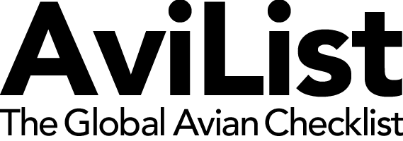
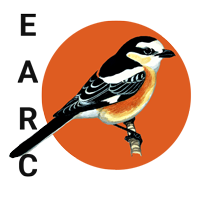
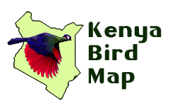
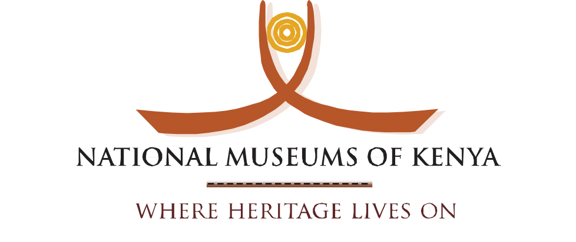

Sixth edition
A living checklist with a long history
This edition follows checklists published in 1981, 1986, 1996, 2009, and 2019. It carries that national record forward while making the evidence, editorial decisions, and changes between editions easier to inspect.
- 1981
- 1986
- 1996
- 2009
- 2019
- 2026Sixth edition

current global taxonomy & sequence
independent review of rare recordsInteractive data
Explore the checklist
Search and filter every species, inspect status categories and evidence summaries, or export the current view.
Open the main tableTaxonomy review
See what changed
Compare the corrected 2019.1 checklist with the current AviList concepts, including replacements, splits, lumps, and additions.
Open the comparisonPrint edition
Take the checklist into the field
Download the complete print-ready checklist, grouped by family and ordered by current AviList sequence.
Download the PDFOrganizations & data
The network behind the checklist
This checklist is made possible by collaboration among Kenyan conservation, research, and birding organizations.
Nature KenyaPublisher & institutional home
A Rocha KenyaPartner & contributor

Kenya Bird MapNational bird-mapping initiative eBird KenyaEvidence & data source
National Museums of KenyaPartner & natural-history collections East African Rarities CommitteeRare-record assessmentChecklist contributors
- Brian Finch
- Colin Jackson

- Don Turner
- Fleur Ng’weno
- James Bradley
- John Fanshawe
- Nigel Hunter
- Okech
- Raphaël Nussbaumer
- Richard Stratton Hatfield
- Victor Ikawa
- Washington Wachira
Data and citation
Cite the published dataset
Formal publication metadata is being prepared.
Open GBIF DOI
View on GBIF
GBIF publication is pending. DOI and dataset links will appear here automatically when added to the publication metadata.